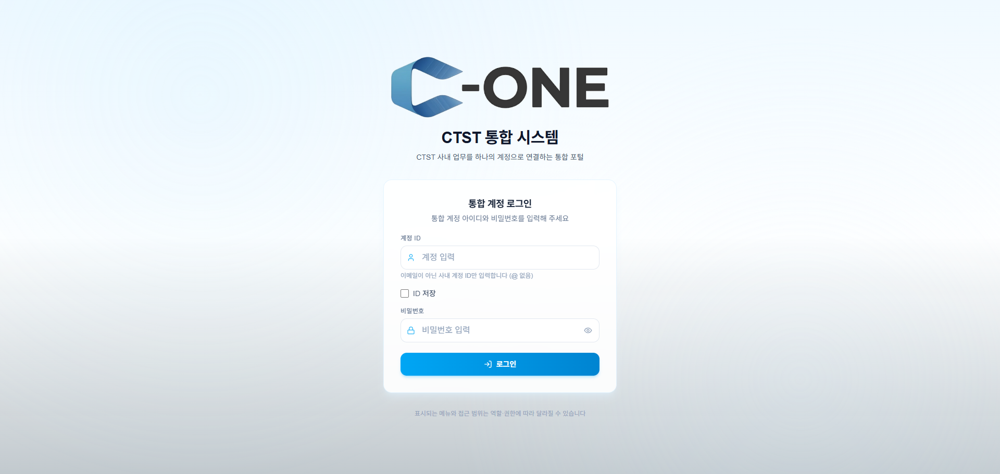
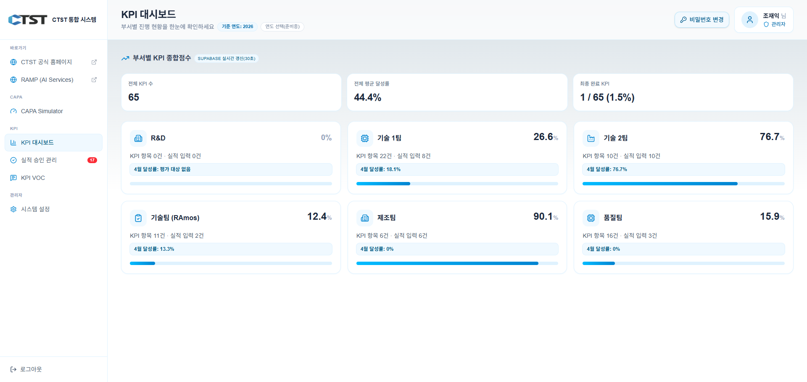
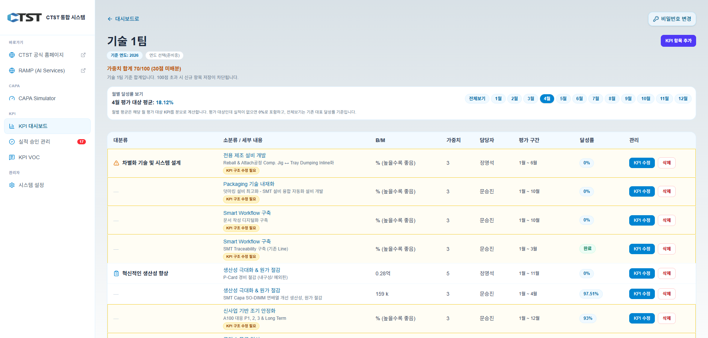
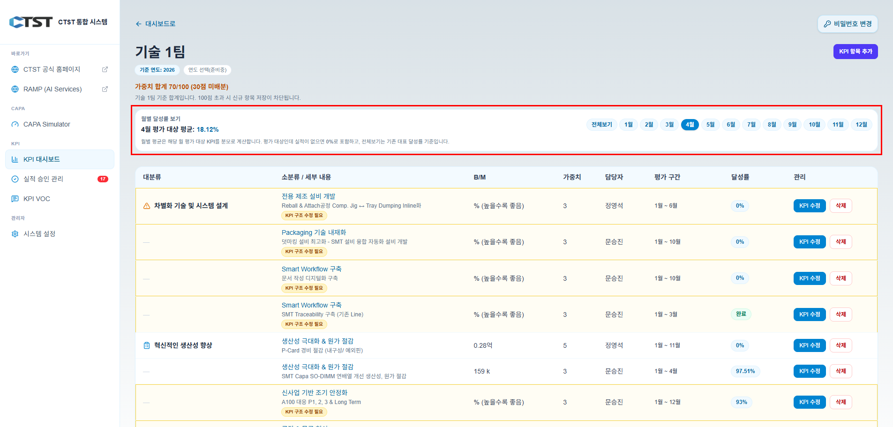
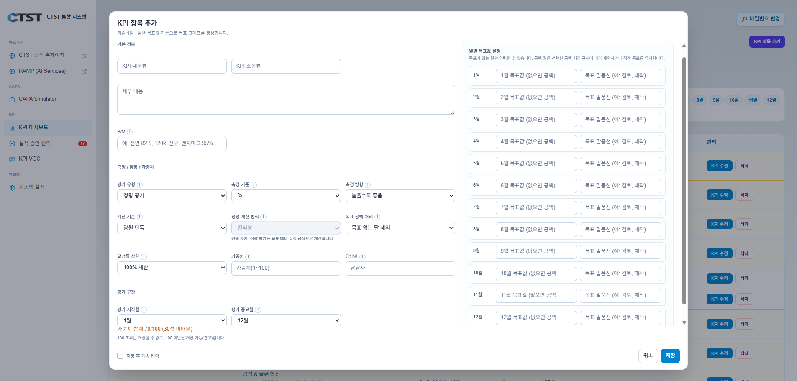
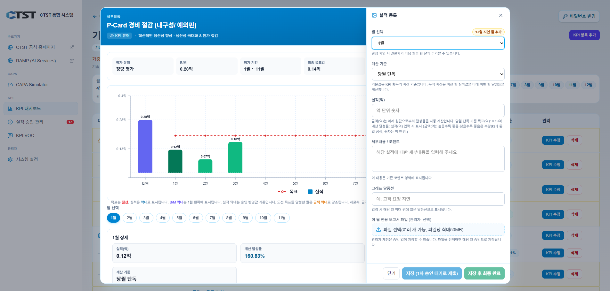
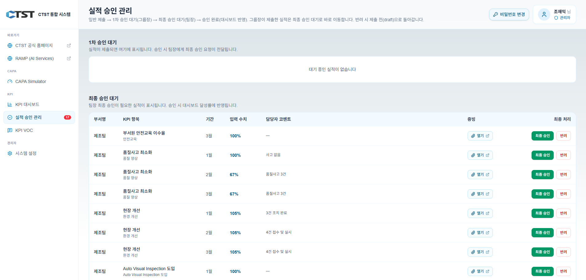
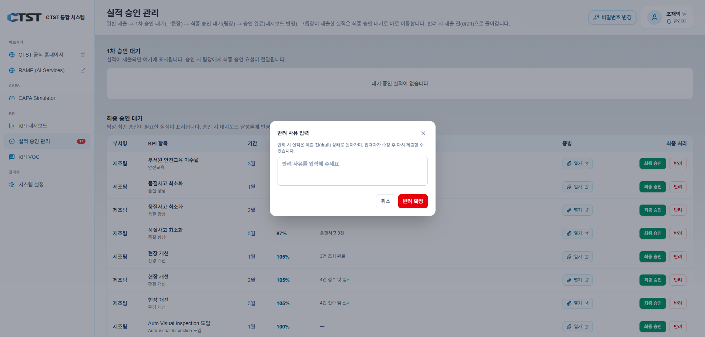
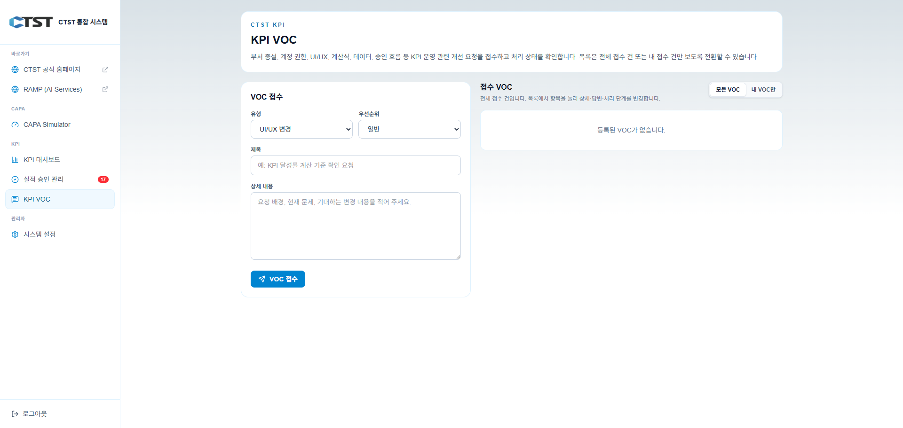

로그인부터 실적·승인·VOC까지, 화면에 나오는 수치가 무엇을 뜻하는지를 중심으로 정리했습니다.
배포용 단일 HTML입니다.
스크린샷이 파일 안에 포함되어 있으므로 이 파일 하나만 전달해도 그림까지 함께 볼 수 있습니다.
문서를 고칠 때는 같은 폴더의 index-src.html을 편집한 뒤,
node embed-images.mjs로 index.html을 다시 만들면 됩니다.
| # | 파일 | 섹션 |
|---|---|---|
| ① | assets/captures/01-login.png | 로그인 |
| ② | 02-dashboard.png | KPI 대시보드 + 수치 계산 |
| ③ | 03-department-list.png | 부서 KPI + 달성률 계산 |
| ④ | 04-month-toggle.png | 전체보기와 월별 |
| ⑤ | 05-kpi-create-modal.png | 지표 예시 |
| ⑥ | 06-performance-modal.png | 실적 입력 |
| ⑦–⑧ | 07… · 08… | 승인 |
| ⑨ | 09-voc.png | VOC |


위쪽 카드 세 개에는 전체 요약이 들어갑니다.
아래에는 부서별 통합 성과 요약 카드가 나열됩니다.
각 수치의 정의는 바로 다음 절을 참고하세요.
아래 표는 같은 기준 연도의 KPI 데이터를 모아 계산한다는 전제입니다.
「전체 KPI 수」는 KPI가 하나 이상 등록된 부서에 속한 KPI 줄만 세어 더한 값입니다.
| 전체 KPI 수 |
부서마다 등록된 KPI 줄 수를 모두 더한 값입니다. KPI가 한 건도 없는 부서는 이 합계에 넣지 않습니다. |
|---|---|
| 전체 평균 달성률 |
먼저 각 부서 카드에 나오는 퍼센트(부서별 통합 달성률)를 구합니다. 그다음 KPI가 존재하는 부서들끼리, 그 퍼센트를 부서 단위로 산술 평균한 숫자입니다. 즉 「부서 대표값들의 평균」이며, 항목 개수가 아니라 부서 개수로 나눕니다. |
| 최종 완료 KPI (분자·분모) |
「최종 완료(마감)」로 처리해 둔 KPI 항목 개수와, 전체 KPI 항목 수를 함께 보여 줍니다. 분자는 상태가 「최종 완료(마감)」로 처리된 항목 수, 분모는 전체 KPI 항목 수입니다. |
| 부서 카드 오른쪽 큰 % |
한마디로: 그 부서 KPI 표에 있는 각 줄의 달성률을 다 더한 것 ÷ 줄 개수입니다. (성적표에서 과목 평균 내는 것과 같습니다.) 예: 같은 부서에 KPI가 셋이고, 줄별 달성률이 각각 80%, 60%, 아직 실적 없음 → 0%로 보면 (80 + 60 + 0) ÷ 3 ≈ 46.7%처럼 카드에 나옵니다. 아직 숫자가 안 올라온 줄은 0%로 간주하고 평균에 반드시 포함합니다. 실적 없는 줄이 있으면 그만큼 합계는 그대로이고 줄 수는 늘어나므로, 평균값은 동일 실적이라도 더 낮게 나옵니다. |
| 카드 안 ○월 달성률 문구 |
달력상 「그 달」에 해당하는 KPI만 고릅니다. 항목별로 그 달 달성률을 읽은 뒤, 다시 평균을 낸 값입니다. 그 달에 평가할 대상만 모아서 분모처럼 쓰는 셈입니다. |
부서 카드 우측 %는 부서 상세 화면 상단의 「전체보기」에서 보이는 줄 평균과 맞추어져 있습니다.

표의 각 줄은 한 개의 KPI 항목입니다.
가중치 합이 100을 넘기면 화면 안내에 따라 신규 KPI 항목 저장이 차단됩니다. 부서 내 합계는 상단에 숫자로 표시됩니다.

| 전체보기 |
각 줄에는 항목마다 하나의 대표 달성률 (%)가 붙습니다(여러 기간 성과가 한 값으로 묶입니다). 항목이 최종 완료 처리되면 같은 열에는 퍼센트 대신 「완료」 뱃지가 나옵니다. 상단 「평균」은 선택한 표시 모드(전체보기) 기준으로, 현재 표에 나온 줄들만 골라 산술 평균을 냅니다. |
|---|---|
| 특정 월 (예: 6월) |
먼저 선택한 달이 KPI 평가 구간 안에 속하는 줄만 남깁니다. 선택한 달이 KPI 평가 구간 밖이면 그 행은 「전체보기」에 있던 달성률 숫자 대신 「평가 제외」처럼 보이며, 위쪽 월별 평균을 낼 때 그 행은 끼우지 않습니다. 남은 각 줄에는 그 달 하나의 목표와 실적으로 계산된 달성률이 붙습니다. 상단 「평균」은 남아 있는 줄만으로 다시 산술 평균을 냅니다. |
| 월별 평균에서 0% 포함 |
그 달 평가 대상인데 실적이 없거나 0이면 해당 줄은 0%로 잡히고 상단 평균에 포함됩니다. 이 내용은 부서 화면 아래쪽 안내 문구(월별 평균 규칙)와 동일한 기준입니다. |
프로필 부서와 화면에 연 부서가 다르고, 계정이 관리자가 아니면 상단에 노란 안내 블록이 뜨며, 그 부서 KPI는 읽기만 하고 「실적 등록」「KPI 수정」「삭제」는 쓰지 못합니다.
관리자는 타 부서 화면에서도 실적·항목 수정·삭제 같은 조작이 가능합니다.

크게 나누면 다음이 맞물립니다.
정량형이며 방향이 「높을수록 좋음」일 때, 시스템은 해당 월 목표량과 실적량을 이용해 달성률을 만들고 기본 형태는 실적 ÷ 목표 × 100입니다.
항목에 달성률 상한을 100%·120%·제한 없음 중 지정했다면 계산 결과는 지정된 한도를 넘지 않게 자릅니다.
측정 기준을 PPM으로 두고 방향을 「낮을수록 좋음」으로 둔 경우, 입력한 목표 PPM·실적 PPM 두 값과 방향에 따라 다음과 같이 처리됩니다.
실적 PPM이 목표보다 낮을수록(불량이 적을수록) 달성률 숫자는 높게, 반대면 낮게 계산되며, 선택한 상한값이 있으면 그 안에서 표시합니다.
단위(k, 건, 억 등)별로 「많을수록 좋음」이면 A, 「적을수록 좋음」이면 B와 같은 패턴입니다. 실제 식에는 입력한 목표값·실적값·달성 상한값이 바로 들어갑니다.
%만 쓸 때도 목표 %와 결과 % 두 값과 방향 설정에 따라 A와 같은 비율식으로 달성률이 채워집니다(방향·상한 포함).
진척형에서는 입력된 현재 진행률과 목표 진행률을 같은 방식대로 넣어, 위 정량 예시와 동일하게 비교해 달성률을 표시합니다.
완료형은 목표일·완료 플래그 기준으로 이미 충족이면 100%, 아니면 0%로 두 갈래로 집계됩니다.
헤더의 「월별 달성률 보기」는 표 전체를 어느 달 관점으로 읽을지만 바꿉니다. 각 KPI 줄 내부의 「당월/누적」설정과는 별도이므로, 두 위치에서 고른 설정을 함께 확인합니다.
대시보드·부서 요약표에 들어가는 달성률은 먼저 승인까지 완료된 실적 행에서 계산합니다.
제출 대기 중이거나 반려된 월 행은 집계에 넣기 전 상태로 두며, 수정 후 재승인되어야 위 수치 공식 대상에 포함됩니다.

항목을 열면 월을 바꿔 다니며 값을 넣습니다.
지표 종류와 당월/누적 설정에 따라 노출되는 입력 필드 종류와 저장되는 값의 의미가 정해져 있습니다.

흐름: 제출 → 필요하면 1차 승인 → 최종 승인입니다.
반려: 작성 상태가 되며, 작성자가 사유를 보고 다시 수정·재제출합니다.
1차 「승인 대기」표는 다음 역할에게만 해당합니다: 관리자, 대표, 그룹장, 그룹장/팀장 복합. 이 역할에는 화면에 1차 표가 채워집니다.
최종 「승인 대기」표는 다음 역할에게 열립니다: 관리자, 대표, 그룹장, 팀장, 그룹장/팀장 복합.
팀장 단일 역할 계정에는 최종 승인 표만 보입니다. 1차 승인 권한에 해당하지 않으므로 1차 표는 빈 목록으로 남습니다.
두 단계 모두 권한이 있는 사람(예: 관리자·그룹장·대표)은 두 표가 같이 출력됩니다. 승인 대기 숫자 뱃지도 본인이 처리해야 할 줄만 더합니다.


카테고리·긴급도 등을 선택한 뒤 제목·내용으로 접수하면 목록 행 하나로 등록되고,
상태 라벨(접수 대기 · 조치 진행 중 · 적용 완료 · 반려/보류)로 진행 순서가 표시됩니다.